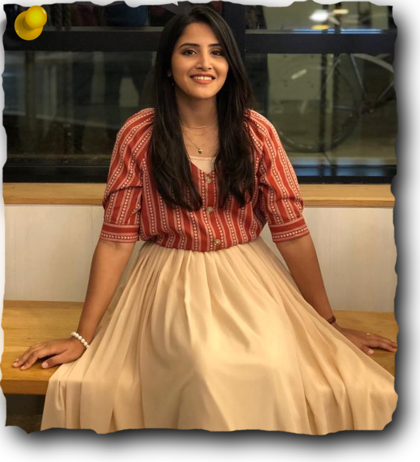

I graduated recently from the University of Pittsburgh, with a Bachelor’s degree in Computer Science.
I am an aspiring Software Engineer looking forward to kickstart my professional career.
Back in high school,
some of my male friends were of the opinion that 'Tech' is not a woman's cup of tea! I knew they were wrong but arguing
with them would be a total waste of time so I decided to do something else, something different! I decided to pursue Computer Science
and get back at them with a living example of a woman in Tech. Yup that's me! Since that day,
I have made computers my best friend and it is this friendship which led me to be
in the top 1% students in my class.
I am a creative and an artistic person. I love to work on projects where I can
play with colors, shapes and, graphics. I am also an effective communicator and a team player. I have successfully
led several team projects throughout my academic career. I recently led a team of 4 individuals to win 1st prize in ‘She Innovates 2019’
hackathon for creating a video game: “CodHer()” to educate and motivate young girls about technology. I have a record of consistently delivering
quality work within the allotted deadline for various assignments and projects. I am passionate about creating a positive impact in human
lives by developing break-through technology.
Education
Universities
University of Pittsburgh, Pittsburgh, PA
BS, Computer Science, transfer, GPA: 4.0/4.0
Habib University, Karachi, Pakistan
BS, Computer Science, Yohsin Scholar, GPA: 3.86/4.0
High School
Aga Khan Higher Secondary School, Karachi, Pakistan
Pre-engineering, Grade: A+ with 93 %; achieved First Position in pre-engineering across Pakistan
Work Experience
Internships
Research and Software Development Intern
University of Pittsburgh, Pittsburgh, PA
- Did thorough research about different Natural Language Processing techniques in Python.
- Read articles and tutorials related to chatbot design and implementation.
- Worked with fellow team members to outline the project requirements,
and discussed different frameworks and languages to be used.
- Developed a chatbot to answer user queries about local bus schedules in Pittsburgh using Python
and Google’s Dialogflow framework for Human-Computer interaction.
- Created more than 20 intents and entities for a smooth conversation flow between the user and the chatbot.
- Created a detailed flow-chart to show the entire work-flow of the chatbot.
- Worked extensively on fixing the chatbot bugs throughout the internship, finally achieving
80% efficiency in answering queries and following up on conversations.
- Did weekly meetings with the project supervisor, demonstrating that week's progress.
- Documented the entire project separately for the end-user and for the developer.
- Used a version-control software(Git) to post daily commits on Github.
Sales Intern
Nestle Pakistan, Karachi, Pakistan
- Worked in a team of two to created comprehensive questionares to survey about Nestle dairy products in Karachi, Pakistan.
- Reached out to Nestle customers in different public spaces to inquire about their experience with Nestle dairy products.
- Conducted more than 200 surveys by talking to the customers in person.
- Compiled the survey results and analyzed public opinion about the Nestle dairy products.
- Created a presentation based on the survey and presented the analysis results to the supervisor.
Job
Peer Tutor
Habib University, Karachi, Pakistan
- Taught ‘Algorithms-Design and Analysis’ to fellow classmates.
- Conducted group study sessions to provide extra help before the final exam.
- Improved the overall passing rate by 50% at the end of the course.
Skills
Programming
Python
C/C++
C#
Java
Haskell
MATLAB
Web Technologies
HTML5/CSS3
JavaScript
Networking
Flask
AJAX/AJAJ
Git/GitHub
Course work
Machine Learning
Computer Graphics
Software Engineering
Game Development
Database Management
Data Structures
Algorithms
Other Skills
Pencil Sketching
Painting
Effective Communication
Time Management
Leadership
Problem Solving
Awards and Achievements
- Consistently appeared in Dean’s honor list at the University of Pittsburgh.
- Consistently appeared in Dean's and President's hono list at Habib University.
- Received 100% scholarship to attend the National University of Singapore (NUS) Summer Enterprise Program 2017.
- Secured 2nd position in University style parliamentary debate competition at Habib University.
- Received Yohsin Scholarship—a 100% merit scholarship ($12,000.00 per annum) to study at Habib University.
- Secured 1st position across Pakistan in Higher Secondary School among more than 3000 candidates.
Extracurriculars and Activities
-
Managed a team of 4 individuals in ‘Randall Family Big Idea Competition’ for ‘CodHer()’, leading the team to the finals.
-
Organized Habib University’s first public programming competition: ‘Code.Play()’.
-
Planned and organized cultural and educational events as a member of ‘Eventos’ and WICSE club at Habib University.
-
Taught underprivileged kids as part of a week-long internship at Idara-Al-Khair Welfare Society, Pakistan.
-
Organized a vigil for the victims of Bacha Khan University attack at Habib University.